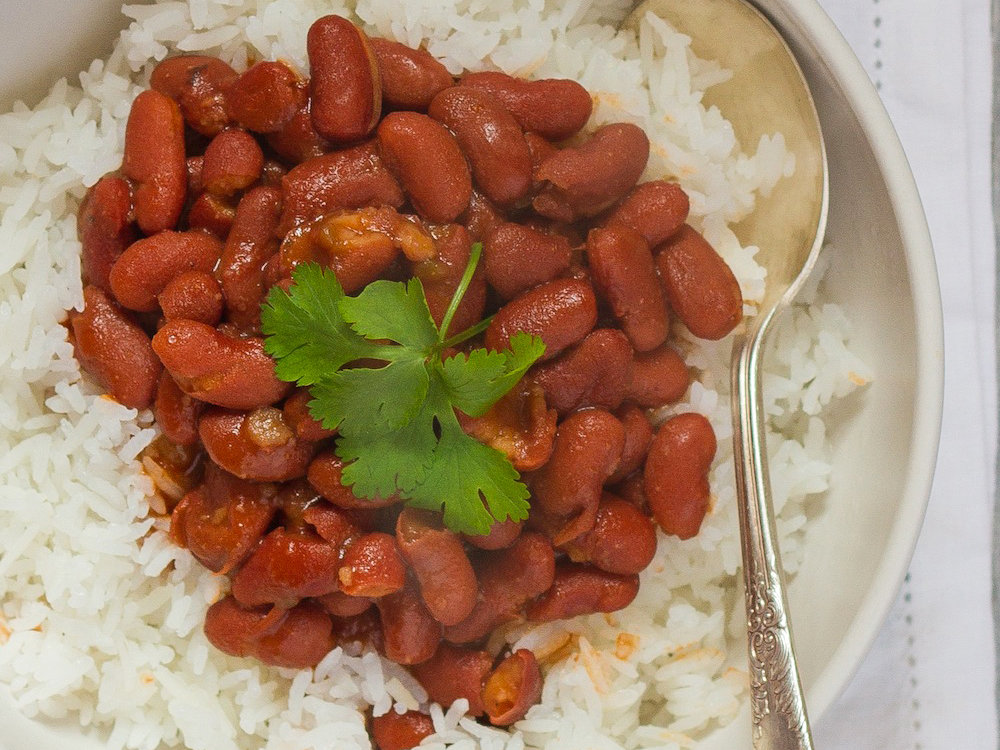

Rice n' Beans

Description
Rice n' beans is yummy
I put them on my balls...
Ingredients
- white rice
- red beans
- ham hock
- oil
- tomato sauce
- sofrito
- sazon
- bacon (optional)
- salt
- pepper
- water
Steps
- pour oil and add the ham hock to a large pot on medium low heat
- add sofrito, bacon, tomato sauce, sazon, and pepper and let simmer
- add the beans, water and salt to the pot and bring to a boil
- reduce the heat to low and let cook for at least an hour, stirring occasionally
- serve with cooked rice